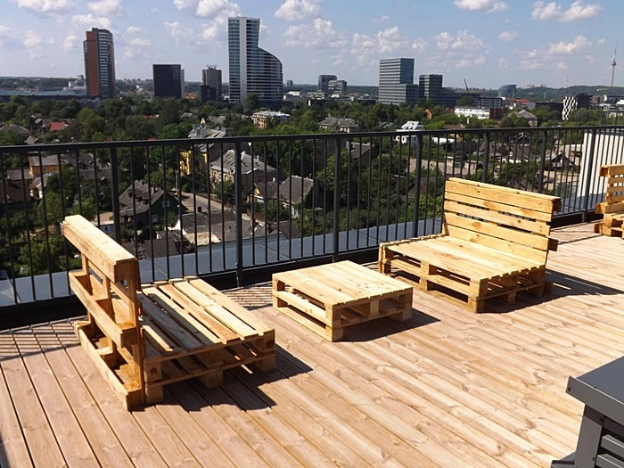
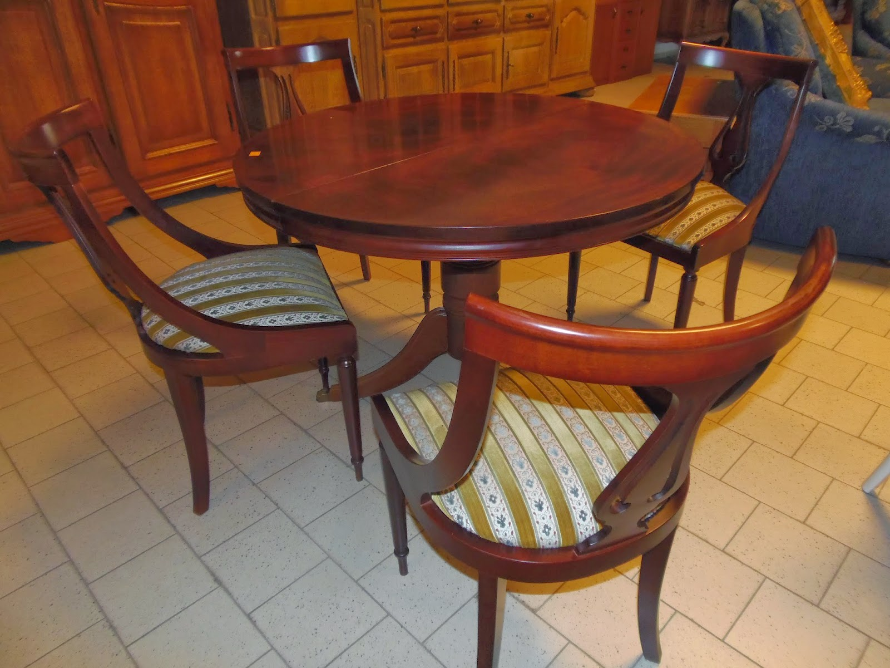

Odiniai baldai internetu | Deinavos baldai

Deinavos
baldai +370 683 44332 I-V 9.00–18.00 e-parduotuve@deinava.lt Rask saloną Pirkimo – pardavimo taisyklės Kokybės ir priežiūros taisyklės Privatumo politika Pristatymo sąlygos Prekių grąžinimo taisyklės Pirkimas išsimokėtinai Apmokėjimas Paskyra Prisijungti/Registruotis Meniu Svetainės Svetainės komplektai Minkšti baldai Sekcijos Vitrinos - indaujos Komodos Spintos Spintelės Spinta - baras Lentynos Baro stalai Kėdės Stalai ir staliukai Veidrodžiai Vaikų Vaikų baldų komplektai Lovos Čiužiniai Antčiužiniai Pagalvės Pufai Sėdmaišiai Spintos Lentynos Rašomieji stalai Kėdės Komodos Spintelės TV staliukai Prieškambario Prieškambario komplektai Minkštasuoliai Spintos Komodos Spintelės Drabužių kabyklos Veidrodžiai Batų dėžės Lentynos Biuro Spintos Komodos Minkštasuoliai Sofos Spintelės Stalai Kėdės Lentynos Žurnaliniai staliukai Virtuvės Virtuvės baldų komplektai Valgomojo komplektai Virtuviniai kampai Stalai Kėdės Miegamojo Miegamojo komplektai Lovos Minkštasuoliai Čiužiniai Antčiužiniai Pagalvės Spintos Komodos Stalai ir staliukai Spintelės Lentynos Veidrodžiai Skrynios Stiliai Šiuolaikinis Skandinaviškas Relax Klasikinis Modernus Moderni klasika Prabangus Provanso Retro Industrinis Kolekcijos ALEZI ARKO ARLES AFINA ALTE ASPEN ASTORIJA AVO AVIGNON AZURO BAHA BALTICA BARSELONA BELFORT BELVEDER BLANCO BRAVO CASTEL COMO CONTRE CONTI COUNTRY DALLAS DOMINO DOMINI DROP ELMO FAN FLORENCJA GLOSS GRANDE HYGA IQ JUNONA KAMA KENDO KOMBI KRISTAL KSAWERY KUBU LEONARDO LIBERTI LOCARNO LUCAS LUMENS LUNA MADISON MARSEL MILANO MOSAIC MONTENEGRO NEPTUN OLIWIER OL-TAR OMEGA OPTIMAL ORLANDO ORFEUSZ OSLO PALERMO PICOLO POLARIS PORTI PRATO RAWENO RIVA SAVONA SELENĖ SHELVE SIENA SKANDI SOFIJA TEDDY TIFFANI TRAFFIC TORINO (Taranko) TORINO VASILISA VELVET VELLE VERONA (NEMAN) VERONA (Taranko) VERSAL VIA ZEFIR WERSAL(Taranko) Prekės sandėlyje Visi baldai Antčiužiniai Baro kėdės Baro stalai Batų dėžės Čiužiniai Darbo stalai Daiktadėžės Drabužių kabyklos Dviaukštės lovos Foteliai Gėlių stovai Indaujos Indaujos - vitrinos Komodos Kėdės Knygų lentynos Kompiuteriniai stalai Lentynos Lovos Minkšti kampai Minkštasuoliai Miegamieji foteliai Naktiniai staliukai prie lovos Naktinės spintelės Pagalvės Pakabinamos lentynos Pastatomos lentynos Pufai Rašomieji stalai Reglaineriai Sekcijos Sėdmaišiai Skrynios Sofos Sofos - lovos Spinta - baras Spintelės Spintos Stalai Supamieji krėslai Taburetės Tualetiniai - kosmetiniai staliukai TV staliukai / TV komodos Vitrinos Žurnaliniai staliukai Veidrodžiai Ąžuoliniai Odiniai EKO odos Natūralios odos Gobeleniniai Mediniai Metaliniai Natūralaus medžio Stikliniai Kieti Moduliniai / sisteminiai Minkšti Baldų komplektai Praktiški / funkcionalūs / ergonomiški Transformuojami Korpusiniai Apie mus Apie mus „Deinava“ baldų salonai Ekspertai pataria Susisiekite su mumis Rekvizitai Informacija Pirkimo – pardavimo taisyklės Kokybės ir priežiūros taisyklės Privatumo politika Pristatymo sąlygos Prekių grąžinimo taisyklės Pirkimas išsimokėtinai Apmokėjimas Prisijungti/Registruotis Svetainės Svetainės komplektai Minkšti baldai Sekcijos Vitrinos - indaujos Komodos Spintos Spintelės Spinta - baras Lentynos Baro stalai Kėdės Stalai ir staliukai Veidrodžiai Svetainės Vaikų Vaikų baldų komplektai Lovos Čiužiniai Antčiužiniai Pagalvės Pufai Sėdmaišiai Spintos Lentynos Rašomieji stalai Kėdės Komodos Spintelės TV staliukai Vaikų Prieškambario Prieškambario komplektai Minkštasuoliai Spintos Komodos Spintelės Drabužių kabyklos Veidrodžiai Batų dėžės Lentynos Prieškambario Biuro Spintos Komodos Minkštasuoliai Sofos Spintelės Stalai Kėdės Lentynos Žurnaliniai staliukai Biuro Virtuvės Virtuvės baldų komplektai Valgomojo komplektai Virtuviniai kampai Stalai Kėdės Virtuvės Miegamojo Miegamojo komplektai Lovos Minkštasuoliai Čiužiniai Antčiužiniai Pagalvės Spintos Komodos Stalai ir staliukai Spintelės Lentynos Veidrodžiai Skrynios Miegamojo Stiliai Šiuolaikinis Skandinaviškas Relax Klasikinis Modernus Moderni klasika Prabangus Provanso Retro Industrinis Miegamojo Kolekcijos Prekės sandėlyje Visi baldai Deinava — Visi baldai — Odiniai Visi baldai Antčiužiniai Baro kėdės Baro stalai Batų dėžės Čiužiniai Darbo stalai Daiktadėžės Drabužių kabyklos Dviaukštės lovos Foteliai Gėlių stovai Indaujos Indaujos - vitrinos Komodos Kėdės Knygų lentynos Kompiuteriniai stalai Lentynos Lovos Minkšti kampai Minkštasuoliai Miegamieji foteliai Naktiniai staliukai prie lovos Naktinės spintelės Pagalvės Pakabinamos lentynos Pastatomos lentynos Pufai Rašomieji stalai Reglaineriai Sekcijos Sėdmaišiai Skrynios Sofos Sofos - lovos Spinta - baras Spintelės Spintos Stalai Supamieji krėslai Taburetės Tualetiniai - kosmetiniai staliukai TV staliukai / TV komodos Vitrinos Žurnaliniai staliukai Veidrodžiai Ąžuoliniai Odiniai EKO odos Natūralios odos Gobeleniniai Mediniai Metaliniai Natūralaus medžio Stikliniai Kieti Moduliniai / sisteminiai Minkšti Baldų komplektai Praktiški / funkcionalūs / ergonomiški Transformuojami Korpusiniai Filtruoti
Odiniai baldai
Odiniai baldai asocijuojasi su prabanga, todėl interjerui visuomet suteikia ypatingą įspūdį. Minkšti odiniai komplektai puikiai įsikuria svetainėse, baldai iš odos labai mėgiami biuruose, darbo kambariuose.
Filtruoti 1 2 3 4Odinių baldų priežiūra
Odiniai baldai labai dailūs, prabangūs, stilingi, patvarūs, bet drauge reikalauja tam tikros priežiūros, siekiant išlaikyti reprezentatyvią jų išvaizdą. Ką svarbu žinoti?
· Odinius baldus reguliariai nuvalykite drėgna šluoste – to reikia dulkėms nuvalyti ir odai drėkinti;
· nevenkite dulkių siurblio – naudodami minkštą šepetėlį kartais nusiurbkite odinius baldus, taip pašalindami nešvarumus iš odos porų;
· riebalų dėmės nesistenkite išvalyti trindami ir plaudami – tiesiog nusausinkite medvilnine šluoste ;
· odai nenaudokite spirito, acto, cheminių valiklių, acetono, abrazyvinių dalelių turinčių valiklių , nes galite sugadinti baldo paviršių;
· išlietus skysčius išvalykite sausa šluoste nedelsiant , kol neįsigėrė į odą;
· nedžiovinkite odos plaukų džiovintuvu, nestatykite pernelyg arti prie radiatorių ar kitų šilumos šaltinių.
Odinių baldų valymas turi būti švelnus ir nenaudojant odai kenksmingų medžiagų. Jei nešvarumų nepašalina vandeniu sudrėkinta šluostė, į pagalbą pasitelkite muilą (neutralų). Dėmę valykite švelniais sukamaisiais judesiais, valykite plotą nuo vienos siūlės iki kitos. Muilą pašalinkite drėgna šluoste ir nusausinkite medvilniniu skudurėliu.
Odiniai baldai interjere
Dažnai odiniai baldai asocijuojasi su tamsiomis spalvomis, bet, kaip sako „Deinavos baldų“ ekspertas Valdas Davidavičius, verta atkreipti dėmesį ir į šviesius odinius baldus bei įsileisti juos į savo interjerą. Balti, pastelinių atspalvių ar net ryškūs baldai puikiai pabrėš individualumą, eleganciją ir kuriamą nuotaiką kambaryje.
Jei visgi pasirinksite tamsius odinius baldus , kontrastų suteikite šviesiomis pagalvėlėmis, patiesę švelnių spalvų kilimą. Ir, atvirkščiai, šviesūs baldai tiks ne tik šviesiame, bet ir tamsaus kolorito interjere bei suteiks jam subtilų kontrastą.
Baldus rinkitės atsižvelgdami į savo šeimos sudėtį bei gyvenimo būdo įpročius. Tai padės nuspręsti, ar Jums reikalinga sofa, fotelis, kampas, taip pat kokių dydžių.
Geri odiniai baldai sudaro puikius derinius su mediniais baldais, todėl nebijokite derinti skirtingų medžiagų.
Odiniai baldai mūsų asortimente
· Odinių baldų komplektai ir pavieniai foteliai, dvivietės, trivietės sofos, įvairių dydžių kampai. Jei nerandate norimos sudėties komplekto, galite pirkti atskirai vienos kolekcijos baldus ir susikurti norimą derinį: 3+2+1, 3+2, 3+1+1 ar kt.
· Mūsų asortimente odiniai baldai svetainei, miegamajam, biurui ir bet kuriai kitai namų ar ofiso zonai.
· Prabangūs, modernūs, klasikiniai, Provanso stiliaus, Chesterfield, loft ir kitiems stiliams atstovaujantys odiniai baldai.
· Odiniai baldai svetainei su reglaineriais, su miegamu mechanizmu arba be jo. Baldai su miegama funkcija labai funkcionalūs, tai praktiškas sprendimas, jei dažnai sulaukiate svečių, bet neturite jiems skirto atskiro kambario.
· Balti, juodi, rudi, pilki, smėlio spalvos, raudoni, geltoni, mėlyni ir kt. – tokia plati spalvų paletė yra mūsų odinių baldų asortimente.
· Oda puikiai dera su medžiu, todėl mūsų asortimente esantys odiniai baldai sudaro patvarius ir vizualiai labai dailius derinius su medinėmis baldų detalėmis.
Kur pirkti odinius baldus?
Jei svarstote, kur pirkti odinius svetainės, miegamojo ar kitai namų erdvei skirtus baldus nebrangiai, bet puikios kokybės, siūlome pasižvalgyti po „Deinavos baldų“ asortimentą. Pirkti pas mus galite internetu el. parduotuvės asortimente arba fizinėje pardavimo vietoje. Mūsų salonai įsikūrę Vilniuje, Kaune, Klaipėdoje ir Elektrėnuose . Patrauklios kainos, taikomos akcijos ir galimybė mokėti pigiau, platus pasirinkimas, dėmesingas aptarnavimas, baldų išpardavimas – visa tai siūlome Jums.
Mūsų asortimente parduodami aukštos kokybės nauji lenkiški, rusiški, lietuviški, baltarusiški baldai, taip pat pasiekiantys mūsų salonus iš Kinijos.
Norite baldus įsigyti lizingu? Siūlome palankias pirkimo išsimokėtinai sąlygas.
Gaukite naujausius pasiūlymus pirmi! Jūsų el. pašto adresas Užsisakyti Ačiū! Deinavos baldai –
nes jaukiuose namuose gyventi gera.
Deinava, UAB
Rungos g. 8, LT-26109 Elektrėnai
+370 683 44332
e-parduotuve@deinava.lt
Apie mus
Apie mus „Deinava“ baldų salonai Ekspertai pataria Susisiekite su mumis RekvizitaiInformacija
Pirkimo – pardavimo taisyklės Kokybės ir priežiūros taisyklės Privatumo politika Pristatymo sąlygos Prekių grąžinimo taisyklės Pirkimas išsimokėtinai ApmokėjimasPaskyra
Prisijungti/Registruotis© 2020 Deinava, UAB. Kopijuoti ir platinti svetainėje esančią informaciją draudžiama.
Mūsų svetainėje naudojami slapukai, kad užtikrintume jums teikiamų paslaugų kokybę. Tęsdami naršymą jūs sutinkate su Deinava slapukų politika Susipažinau